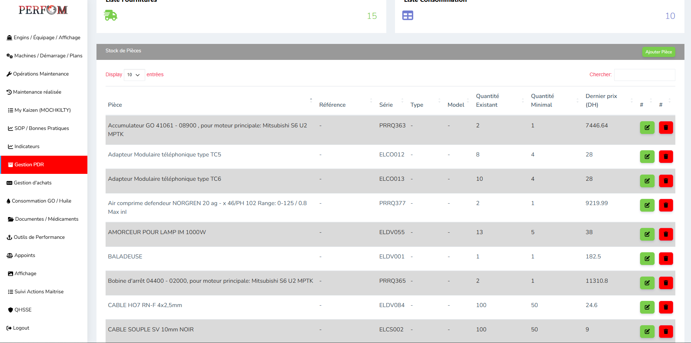
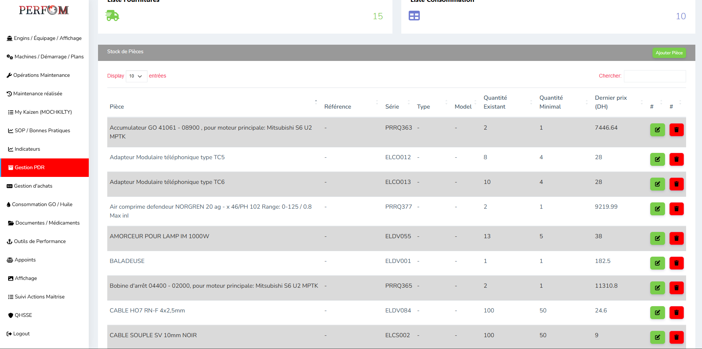

PERFO3M
Perfo3M is an internal enterprise web application developed for Marsa Maroc, tailored to monitor and enhance operational performance in maritime logistics, especially around equipment (engins), maintenance, and resource management
 

The system centralizes and automates processes related to:
🛠️ Asset & Maintenance Management
- Engins & Machines
- Track location, status, and maintenance of port machinery.
- Preventive, Corrective, and Conditional Maintenance
- Schedule and monitor all types of maintenance activities.
- MTTR & MTBF Indicators
- Analyze reliability and performance metrics for better maintenance decisions.
👷 Human Resources & Operations
- Employees
- Manage personnel data, assignments, and archival.
- Operations & Demarrage
- Log operational activities and startup events for machinery.
- Actions & SOPs
- Define standard operating procedures and corrective actions.
🧾 Inventory & Procurement
- Stock & Spare Parts
- Monitor inventory levels and manage parts used in maintenance.
- Purchases
- Handle purchases of items and categorize them by type and rubric.
📊 Monitoring & Analytics
- Indicators
- Visualize customer satisfaction, safety incidents, and other KPIs.
- Kaizen
- Implement continuous improvement (lean methodology) through problem-solving workflows.
- PDF Reports
- Export reports for audits, reviews, or presentations.
🛢️ Fuel and Consumables
- Gasoil Consumptio
- Track and analyze fuel usage for machinery.
- Medical Supplies & Documents
- Record usage of medications and manage important documentation.